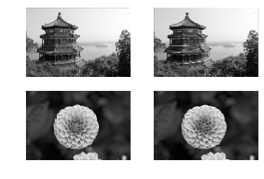
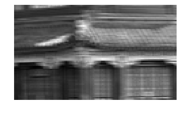
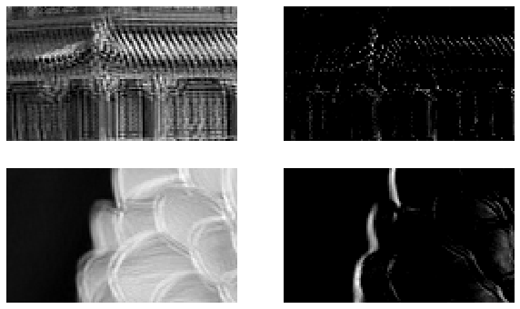
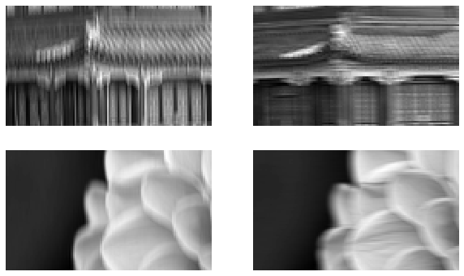
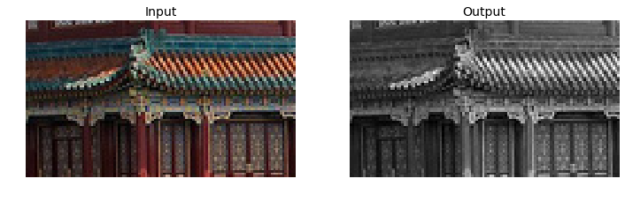
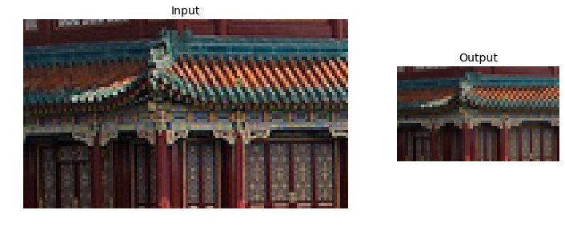
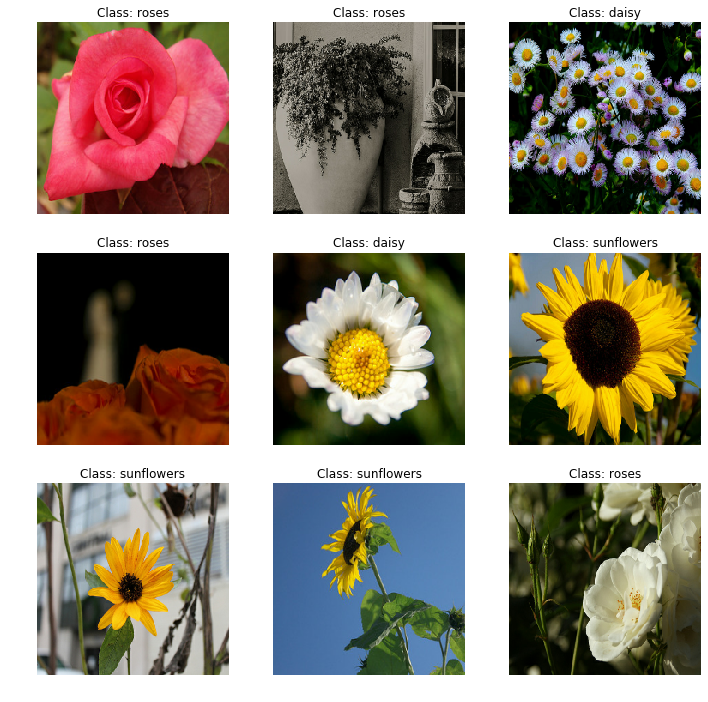
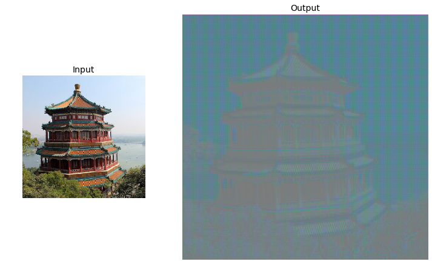
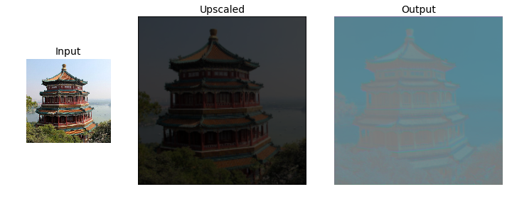

# Python ≥3.5 is required
import sys
assert sys.version_info >= (3, 5)
# Is this notebook running on Colab or Kaggle?
IS_COLAB = "google.colab" in sys.modules
IS_KAGGLE = "kaggle_secrets" in sys.modules
# Scikit-Learn ≥0.20 is required
import sklearn
assert sklearn.__version__ >= "0.20"
# TensorFlow ≥2.0 is required
import tensorflow as tf
from tensorflow import keras
assert tf.__version__ >= "2.0"
if not tf.config.list_physical_devices('GPU'):
print("No GPU was detected. CNNs can be very slow without a GPU.")
if IS_COLAB:
print("Go to Runtime > Change runtime and select a GPU hardware accelerator.")
if IS_KAGGLE:
print("Go to Settings > Accelerator and select GPU.")
# Common imports
import numpy as np
import os
# to make this notebook's output stable across runs
np.random.seed(42)
tf.random.set_seed(42)
# To plot pretty figures
%matplotlib inline
import matplotlib as mpl
import matplotlib.pyplot as plt
mpl.rc('axes', labelsize=14)
mpl.rc('xtick', labelsize=12)
mpl.rc('ytick', labelsize=12)
# Where to save the figures
PROJECT_ROOT_DIR = "."
CHAPTER_ID = "cnn"
IMAGES_PATH = os.path.join(PROJECT_ROOT_DIR, "images", CHAPTER_ID)
os.makedirs(IMAGES_PATH, exist_ok=True)
def save_fig(fig_id, tight_layout=True, fig_extension="png", resolution=300):
path = os.path.join(IMAGES_PATH, fig_id + "." + fig_extension)
print("Saving figure", fig_id)
if tight_layout:
plt.tight_layout()
plt.savefig(path, format=fig_extension, dpi=resolution)Chapter 14 – Deep Computer Vision Using Convolutional Neural Networks
This notebook contains all the sample code in chapter 14.
Setup
First, let’s import a few common modules, ensure MatplotLib plots figures inline and prepare a function to save the figures. We also check that Python 3.5 or later is installed (although Python 2.x may work, it is deprecated so we strongly recommend you use Python 3 instead), as well as Scikit-Learn ≥0.20 and TensorFlow ≥2.0.
A couple utility functions to plot grayscale and RGB images:
def plot_image(image):
plt.imshow(image, cmap="gray", interpolation="nearest")
plt.axis("off")
def plot_color_image(image):
plt.imshow(image, interpolation="nearest")
plt.axis("off")What is a Convolution?
import numpy as np
from sklearn.datasets import load_sample_image
# Load sample images
china = load_sample_image("china.jpg") / 255
flower = load_sample_image("flower.jpg") / 255
images = np.array([china, flower])
batch_size, height, width, channels = images.shape
# Create 2 filters
filters = np.zeros(shape=(7, 7, channels, 2), dtype=np.float32)
filters[:, 3, :, 0] = 1 # vertical line
filters[3, :, :, 1] = 1 # horizontal line
outputs = tf.nn.conv2d(images, filters, strides=1, padding="SAME")
plt.imshow(outputs[0, :, :, 1], cmap="gray") # plot 1st image's 2nd feature map
plt.axis("off") # Not shown in the book
plt.show()for image_index in (0, 1):
for feature_map_index in (0, 1):
plt.subplot(2, 2, image_index * 2 + feature_map_index + 1)
plot_image(outputs[image_index, :, :, feature_map_index])
plt.show()
def crop(images):
return images[150:220, 130:250]plot_image(crop(images[0, :, :, 0]))
save_fig("china_original", tight_layout=False)
plt.show()
for feature_map_index, filename in enumerate(["china_vertical", "china_horizontal"]):
plot_image(crop(outputs[0, :, :, feature_map_index]))
save_fig(filename, tight_layout=False)
plt.show()Saving figure china_original
Saving figure china_vertical
Saving figure china_horizontal


plot_image(filters[:, :, 0, 0])
plt.show()
plot_image(filters[:, :, 0, 1])
plt.show()
Convolutional Layer
Let’s create a 2D convolutional layer, using keras.layers.Conv2D():
np.random.seed(42)
tf.random.set_seed(42)
conv = keras.layers.Conv2D(filters=2, kernel_size=7, strides=1,
padding="SAME", activation="relu", input_shape=outputs.shape)Let’s call this layer, passing it the two test images:
conv_outputs = conv(images)
conv_outputs.shape TensorShape([2, 427, 640, 2])The output is a 4D tensor. The dimensions are: batch size, height, width, channels. The first dimension (batch size) is 2 since there are 2 input images. The next two dimensions are the height and width of the output feature maps: since padding="SAME" and strides=1, the output feature maps have the same height and width as the input images (in this case, 427×640). Lastly, this convolutional layer has 2 filters, so the last dimension is 2: there are 2 output feature maps per input image.
Since the filters are initialized randomly, they’ll initially detect random patterns. Let’s take a look at the 2 output features maps for each image:
plt.figure(figsize=(10,6))
for image_index in (0, 1):
for feature_map_index in (0, 1):
plt.subplot(2, 2, image_index * 2 + feature_map_index + 1)
plot_image(crop(conv_outputs[image_index, :, :, feature_map_index]))
plt.show()
Although the filters were initialized randomly, the second filter happens to act like an edge detector. Randomly initialized filters often act this way, which is quite fortunate since detecting edges is quite useful in image processing.
If we want, we can set the filters to be the ones we manually defined earlier, and set the biases to zeros (in real life we will almost never need to set filters or biases manually, as the convolutional layer will just learn the appropriate filters and biases during training):
conv.set_weights([filters, np.zeros(2)])Now let’s call this layer again on the same two images, and let’s check that the output feature maps do highlight vertical lines and horizontal lines, respectively (as earlier):
conv_outputs = conv(images)
conv_outputs.shape TensorShape([2, 427, 640, 2])plt.figure(figsize=(10,6))
for image_index in (0, 1):
for feature_map_index in (0, 1):
plt.subplot(2, 2, image_index * 2 + feature_map_index + 1)
plot_image(crop(conv_outputs[image_index, :, :, feature_map_index]))
plt.show()
VALID vs SAME padding
def feature_map_size(input_size, kernel_size, strides=1, padding="SAME"):
if padding == "SAME":
return (input_size - 1) // strides + 1
else:
return (input_size - kernel_size) // strides + 1def pad_before_and_padded_size(input_size, kernel_size, strides=1):
fmap_size = feature_map_size(input_size, kernel_size, strides)
padded_size = max((fmap_size - 1) * strides + kernel_size, input_size)
pad_before = (padded_size - input_size) // 2
return pad_before, padded_sizedef manual_same_padding(images, kernel_size, strides=1):
if kernel_size == 1:
return images.astype(np.float32)
batch_size, height, width, channels = images.shape
top_pad, padded_height = pad_before_and_padded_size(height, kernel_size, strides)
left_pad, padded_width = pad_before_and_padded_size(width, kernel_size, strides)
padded_shape = [batch_size, padded_height, padded_width, channels]
padded_images = np.zeros(padded_shape, dtype=np.float32)
padded_images[:, top_pad:height+top_pad, left_pad:width+left_pad, :] = images
return padded_imagesUsing "SAME" padding is equivalent to padding manually using manual_same_padding() then using "VALID" padding (confusingly, "VALID" padding means no padding at all):
kernel_size = 7
strides = 2
conv_valid = keras.layers.Conv2D(filters=1, kernel_size=kernel_size, strides=strides, padding="VALID")
conv_same = keras.layers.Conv2D(filters=1, kernel_size=kernel_size, strides=strides, padding="SAME")
valid_output = conv_valid(manual_same_padding(images, kernel_size, strides))
# Need to call build() so conv_same's weights get created
conv_same.build(tf.TensorShape(images.shape))
# Copy the weights from conv_valid to conv_same
conv_same.set_weights(conv_valid.get_weights())
same_output = conv_same(images.astype(np.float32))
assert np.allclose(valid_output.numpy(), same_output.numpy())Pooling layer
Max pooling
max_pool = keras.layers.MaxPool2D(pool_size=2)cropped_images = np.array([crop(image) for image in images], dtype=np.float32)
output = max_pool(cropped_images)fig = plt.figure(figsize=(12, 8))
gs = mpl.gridspec.GridSpec(nrows=1, ncols=2, width_ratios=[2, 1])
ax1 = fig.add_subplot(gs[0, 0])
ax1.set_title("Input", fontsize=14)
ax1.imshow(cropped_images[0]) # plot the 1st image
ax1.axis("off")
ax2 = fig.add_subplot(gs[0, 1])
ax2.set_title("Output", fontsize=14)
ax2.imshow(output[0]) # plot the output for the 1st image
ax2.axis("off")
save_fig("china_max_pooling")
plt.show()Saving figure china_max_pooling
Depth-wise pooling
class DepthMaxPool(keras.layers.Layer):
def __init__(self, pool_size, strides=None, padding="VALID", **kwargs):
super().__init__(**kwargs)
if strides is None:
strides = pool_size
self.pool_size = pool_size
self.strides = strides
self.padding = padding
def call(self, inputs):
return tf.nn.max_pool(inputs,
ksize=(1, 1, 1, self.pool_size),
strides=(1, 1, 1, self.pool_size),
padding=self.padding)depth_pool = DepthMaxPool(3)
with tf.device("/cpu:0"): # there is no GPU-kernel yet
depth_output = depth_pool(cropped_images)
depth_output.shapeTensorShape([2, 70, 120, 1])Or just use a Lambda layer:
depth_pool = keras.layers.Lambda(lambda X: tf.nn.max_pool(
X, ksize=(1, 1, 1, 3), strides=(1, 1, 1, 3), padding="VALID"))
with tf.device("/cpu:0"): # there is no GPU-kernel yet
depth_output = depth_pool(cropped_images)
depth_output.shapeTensorShape([2, 70, 120, 1])plt.figure(figsize=(12, 8))
plt.subplot(1, 2, 1)
plt.title("Input", fontsize=14)
plot_color_image(cropped_images[0]) # plot the 1st image
plt.subplot(1, 2, 2)
plt.title("Output", fontsize=14)
plot_image(depth_output[0, ..., 0]) # plot the output for the 1st image
plt.axis("off")
plt.show()
Average pooling
avg_pool = keras.layers.AvgPool2D(pool_size=2)output_avg = avg_pool(cropped_images)fig = plt.figure(figsize=(12, 8))
gs = mpl.gridspec.GridSpec(nrows=1, ncols=2, width_ratios=[2, 1])
ax1 = fig.add_subplot(gs[0, 0])
ax1.set_title("Input", fontsize=14)
ax1.imshow(cropped_images[0]) # plot the 1st image
ax1.axis("off")
ax2 = fig.add_subplot(gs[0, 1])
ax2.set_title("Output", fontsize=14)
ax2.imshow(output_avg[0]) # plot the output for the 1st image
ax2.axis("off")
plt.show()
Global Average Pooling
global_avg_pool = keras.layers.GlobalAvgPool2D()
global_avg_pool(cropped_images)<tf.Tensor: id=151, shape=(2, 3), dtype=float64, numpy=
array([[0.27887768, 0.2250719 , 0.20967274],
[0.51288515, 0.45951634, 0.33423483]])>output_global_avg2 = keras.layers.Lambda(lambda X: tf.reduce_mean(X, axis=[1, 2]))
output_global_avg2(cropped_images)<tf.Tensor: id=155, shape=(2, 3), dtype=float64, numpy=
array([[0.27887768, 0.2250719 , 0.20967274],
[0.51288515, 0.45951634, 0.33423483]])>Tackling Fashion MNIST With a CNN
(X_train_full, y_train_full), (X_test, y_test) = keras.datasets.fashion_mnist.load_data()
X_train, X_valid = X_train_full[:-5000], X_train_full[-5000:]
y_train, y_valid = y_train_full[:-5000], y_train_full[-5000:]
X_mean = X_train.mean(axis=0, keepdims=True)
X_std = X_train.std(axis=0, keepdims=True) + 1e-7
X_train = (X_train - X_mean) / X_std
X_valid = (X_valid - X_mean) / X_std
X_test = (X_test - X_mean) / X_std
X_train = X_train[..., np.newaxis]
X_valid = X_valid[..., np.newaxis]
X_test = X_test[..., np.newaxis]from functools import partial
DefaultConv2D = partial(keras.layers.Conv2D,
kernel_size=3, activation='relu', padding="SAME")
model = keras.models.Sequential([
DefaultConv2D(filters=64, kernel_size=7, input_shape=[28, 28, 1]),
keras.layers.MaxPooling2D(pool_size=2),
DefaultConv2D(filters=128),
DefaultConv2D(filters=128),
keras.layers.MaxPooling2D(pool_size=2),
DefaultConv2D(filters=256),
DefaultConv2D(filters=256),
keras.layers.MaxPooling2D(pool_size=2),
keras.layers.Flatten(),
keras.layers.Dense(units=128, activation='relu'),
keras.layers.Dropout(0.5),
keras.layers.Dense(units=64, activation='relu'),
keras.layers.Dropout(0.5),
keras.layers.Dense(units=10, activation='softmax'),
])model.compile(loss="sparse_categorical_crossentropy", optimizer="nadam", metrics=["accuracy"])
history = model.fit(X_train, y_train, epochs=10, validation_data=(X_valid, y_valid))
score = model.evaluate(X_test, y_test)
X_new = X_test[:10] # pretend we have new images
y_pred = model.predict(X_new)Train on 55000 samples, validate on 5000 samples
Epoch 1/10
55000/55000 [==============================] - 51s 923us/sample - loss: 0.7183 - accuracy: 0.7529 - val_loss: 0.4029 - val_accuracy: 0.8510
Epoch 2/10
55000/55000 [==============================] - 47s 863us/sample - loss: 0.4185 - accuracy: 0.8592 - val_loss: 0.3285 - val_accuracy: 0.8854
Epoch 3/10
55000/55000 [==============================] - 46s 836us/sample - loss: 0.3691 - accuracy: 0.8765 - val_loss: 0.2905 - val_accuracy: 0.8936
Epoch 4/10
55000/55000 [==============================] - 46s 832us/sample - loss: 0.3324 - accuracy: 0.8879 - val_loss: 0.2794 - val_accuracy: 0.8970
Epoch 5/10
55000/55000 [==============================] - 48s 880us/sample - loss: 0.3100 - accuracy: 0.8960 - val_loss: 0.2872 - val_accuracy: 0.8942
Epoch 6/10
55000/55000 [==============================] - 51s 921us/sample - loss: 0.2930 - accuracy: 0.9008 - val_loss: 0.2863 - val_accuracy: 0.8980
Epoch 7/10
55000/55000 [==============================] - 50s 918us/sample - loss: 0.2847 - accuracy: 0.9030 - val_loss: 0.2825 - val_accuracy: 0.8972
Epoch 8/10
55000/55000 [==============================] - 50s 915us/sample - loss: 0.2728 - accuracy: 0.9080 - val_loss: 0.2734 - val_accuracy: 0.8990
Epoch 9/10
55000/55000 [==============================] - 50s 913us/sample - loss: 0.2558 - accuracy: 0.9139 - val_loss: 0.2775 - val_accuracy: 0.9056
Epoch 10/10
55000/55000 [==============================] - 50s 911us/sample - loss: 0.2561 - accuracy: 0.9145 - val_loss: 0.2891 - val_accuracy: 0.9036
10000/10000 [==============================] - 2s 239us/sample - loss: 0.2972 - accuracy: 0.8983ResNet-34
DefaultConv2D = partial(keras.layers.Conv2D, kernel_size=3, strides=1,
padding="SAME", use_bias=False)
class ResidualUnit(keras.layers.Layer):
def __init__(self, filters, strides=1, activation="relu", **kwargs):
super().__init__(**kwargs)
self.activation = keras.activations.get(activation)
self.main_layers = [
DefaultConv2D(filters, strides=strides),
keras.layers.BatchNormalization(),
self.activation,
DefaultConv2D(filters),
keras.layers.BatchNormalization()]
self.skip_layers = []
if strides > 1:
self.skip_layers = [
DefaultConv2D(filters, kernel_size=1, strides=strides),
keras.layers.BatchNormalization()]
def call(self, inputs):
Z = inputs
for layer in self.main_layers:
Z = layer(Z)
skip_Z = inputs
for layer in self.skip_layers:
skip_Z = layer(skip_Z)
return self.activation(Z + skip_Z)model = keras.models.Sequential()
model.add(DefaultConv2D(64, kernel_size=7, strides=2,
input_shape=[224, 224, 3]))
model.add(keras.layers.BatchNormalization())
model.add(keras.layers.Activation("relu"))
model.add(keras.layers.MaxPool2D(pool_size=3, strides=2, padding="SAME"))
prev_filters = 64
for filters in [64] * 3 + [128] * 4 + [256] * 6 + [512] * 3:
strides = 1 if filters == prev_filters else 2
model.add(ResidualUnit(filters, strides=strides))
prev_filters = filters
model.add(keras.layers.GlobalAvgPool2D())
model.add(keras.layers.Flatten())
model.add(keras.layers.Dense(10, activation="softmax"))model.summary()Model: "sequential"
_________________________________________________________________
Layer (type) Output Shape Param #
=================================================================
conv2d (Conv2D) (None, 112, 112, 64) 9408
_________________________________________________________________
batch_normalization (BatchNo (None, 112, 112, 64) 256
_________________________________________________________________
activation (Activation) (None, 112, 112, 64) 0
_________________________________________________________________
max_pooling2d (MaxPooling2D) (None, 56, 56, 64) 0
_________________________________________________________________
residual_unit (ResidualUnit) (None, 56, 56, 64) 74240
_________________________________________________________________
residual_unit_1 (ResidualUni (None, 56, 56, 64) 74240
_________________________________________________________________
residual_unit_2 (ResidualUni (None, 56, 56, 64) 74240
_________________________________________________________________
residual_unit_3 (ResidualUni (None, 28, 28, 128) 230912
_________________________________________________________________
residual_unit_4 (ResidualUni (None, 28, 28, 128) 295936
_________________________________________________________________
residual_unit_5 (ResidualUni (None, 28, 28, 128) 295936
_________________________________________________________________
residual_unit_6 (ResidualUni (None, 28, 28, 128) 295936
_________________________________________________________________
residual_unit_7 (ResidualUni (None, 14, 14, 256) 920576
_________________________________________________________________
residual_unit_8 (ResidualUni (None, 14, 14, 256) 1181696
_________________________________________________________________
residual_unit_9 (ResidualUni (None, 14, 14, 256) 1181696
_________________________________________________________________
residual_unit_10 (ResidualUn (None, 14, 14, 256) 1181696
_________________________________________________________________
residual_unit_11 (ResidualUn (None, 14, 14, 256) 1181696
_________________________________________________________________
residual_unit_12 (ResidualUn (None, 14, 14, 256) 1181696
_________________________________________________________________
residual_unit_13 (ResidualUn (None, 7, 7, 512) 3676160
_________________________________________________________________
residual_unit_14 (ResidualUn (None, 7, 7, 512) 4722688
_________________________________________________________________
residual_unit_15 (ResidualUn (None, 7, 7, 512) 4722688
_________________________________________________________________
global_average_pooling2d (Gl (None, 512) 0
_________________________________________________________________
flatten (Flatten) (None, 512) 0
_________________________________________________________________
dense (Dense) (None, 10) 5130
=================================================================
Total params: 21,306,826
Trainable params: 21,289,802
Non-trainable params: 17,024
_________________________________________________________________Using a Pretrained Model
model = keras.applications.resnet50.ResNet50(weights="imagenet")images_resized = tf.image.resize(images, [224, 224])
plot_color_image(images_resized[0])
plt.show()
images_resized = tf.image.resize_with_pad(images, 224, 224, antialias=True)
plot_color_image(images_resized[0])images_resized = tf.image.resize_with_crop_or_pad(images, 224, 224)
plot_color_image(images_resized[0])
plt.show()
china_box = [0, 0.03, 1, 0.68]
flower_box = [0.19, 0.26, 0.86, 0.7]
images_resized = tf.image.crop_and_resize(images, [china_box, flower_box], [0, 1], [224, 224])
plot_color_image(images_resized[0])
plt.show()
plot_color_image(images_resized[1])
plt.show()
inputs = keras.applications.resnet50.preprocess_input(images_resized * 255)
Y_proba = model.predict(inputs)Y_proba.shape(2, 1000)top_K = keras.applications.resnet50.decode_predictions(Y_proba, top=3)
for image_index in range(len(images)):
print("Image #{}".format(image_index))
for class_id, name, y_proba in top_K[image_index]:
print(" {} - {:12s} {:.2f}%".format(class_id, name, y_proba * 100))
print()Image #0
n03877845 - palace 42.87%
n02825657 - bell_cote 40.57%
n03781244 - monastery 14.56%
Image #1
n04522168 - vase 46.83%
n07930864 - cup 7.78%
n11939491 - daisy 4.87%
Pretrained Models for Transfer Learning
import tensorflow_datasets as tfds
dataset, info = tfds.load("tf_flowers", as_supervised=True, with_info=True)info.splits{'train': <tfds.core.SplitInfo num_examples=3670>}info.splits["train"]<tfds.core.SplitInfo num_examples=3670>class_names = info.features["label"].names
class_names['dandelion', 'daisy', 'tulips', 'sunflowers', 'roses']n_classes = info.features["label"].num_classesdataset_size = info.splits["train"].num_examples
dataset_size3670Warning: TFDS’s split API has evolved since the book was published. The new split API (called S3) is much simpler to use:
test_set_raw, valid_set_raw, train_set_raw = tfds.load(
"tf_flowers",
split=["train[:10%]", "train[10%:25%]", "train[25%:]"],
as_supervised=True)plt.figure(figsize=(12, 10))
index = 0
for image, label in train_set_raw.take(9):
index += 1
plt.subplot(3, 3, index)
plt.imshow(image)
plt.title("Class: {}".format(class_names[label]))
plt.axis("off")
plt.show()
Basic preprocessing:
def preprocess(image, label):
resized_image = tf.image.resize(image, [224, 224])
final_image = keras.applications.xception.preprocess_input(resized_image)
return final_image, labelSlightly fancier preprocessing (but you could add much more data augmentation):
def central_crop(image):
shape = tf.shape(image)
min_dim = tf.reduce_min([shape[0], shape[1]])
top_crop = (shape[0] - min_dim) // 4
bottom_crop = shape[0] - top_crop
left_crop = (shape[1] - min_dim) // 4
right_crop = shape[1] - left_crop
return image[top_crop:bottom_crop, left_crop:right_crop]
def random_crop(image):
shape = tf.shape(image)
min_dim = tf.reduce_min([shape[0], shape[1]]) * 90 // 100
return tf.image.random_crop(image, [min_dim, min_dim, 3])
def preprocess(image, label, randomize=False):
if randomize:
cropped_image = random_crop(image)
cropped_image = tf.image.random_flip_left_right(cropped_image)
else:
cropped_image = central_crop(image)
resized_image = tf.image.resize(cropped_image, [224, 224])
final_image = keras.applications.xception.preprocess_input(resized_image)
return final_image, label
batch_size = 32
train_set = train_set_raw.shuffle(1000).repeat()
train_set = train_set.map(partial(preprocess, randomize=True)).batch(batch_size).prefetch(1)
valid_set = valid_set_raw.map(preprocess).batch(batch_size).prefetch(1)
test_set = test_set_raw.map(preprocess).batch(batch_size).prefetch(1)plt.figure(figsize=(12, 12))
for X_batch, y_batch in train_set.take(1):
for index in range(9):
plt.subplot(3, 3, index + 1)
plt.imshow(X_batch[index] / 2 + 0.5)
plt.title("Class: {}".format(class_names[y_batch[index]]))
plt.axis("off")
plt.show()
plt.figure(figsize=(12, 12))
for X_batch, y_batch in test_set.take(1):
for index in range(9):
plt.subplot(3, 3, index + 1)
plt.imshow(X_batch[index] / 2 + 0.5)
plt.title("Class: {}".format(class_names[y_batch[index]]))
plt.axis("off")
plt.show()
base_model = keras.applications.xception.Xception(weights="imagenet",
include_top=False)
avg = keras.layers.GlobalAveragePooling2D()(base_model.output)
output = keras.layers.Dense(n_classes, activation="softmax")(avg)
model = keras.models.Model(inputs=base_model.input, outputs=output)for index, layer in enumerate(base_model.layers):
print(index, layer.name)0 input_2
1 block1_conv1
2 block1_conv1_bn
3 block1_conv1_act
4 block1_conv2
5 block1_conv2_bn
6 block1_conv2_act
7 block2_sepconv1
8 block2_sepconv1_bn
9 block2_sepconv2_act
10 block2_sepconv2
11 block2_sepconv2_bn
12 conv2d_44
13 block2_pool
14 batch_normalization_35
15 add_16
16 block3_sepconv1_act
17 block3_sepconv1
18 block3_sepconv1_bn
19 block3_sepconv2_act
20 block3_sepconv2
21 block3_sepconv2_bn
22 conv2d_45
23 block3_pool
24 batch_normalization_36
25 add_17
26 block4_sepconv1_act
27 block4_sepconv1
28 block4_sepconv1_bn
29 block4_sepconv2_act
30 block4_sepconv2
31 block4_sepconv2_bn
32 conv2d_46
33 block4_pool
34 batch_normalization_37
<<62 more lines>>
97 block11_sepconv1
98 block11_sepconv1_bn
99 block11_sepconv2_act
100 block11_sepconv2
101 block11_sepconv2_bn
102 block11_sepconv3_act
103 block11_sepconv3
104 block11_sepconv3_bn
105 add_25
106 block12_sepconv1_act
107 block12_sepconv1
108 block12_sepconv1_bn
109 block12_sepconv2_act
110 block12_sepconv2
111 block12_sepconv2_bn
112 block12_sepconv3_act
113 block12_sepconv3
114 block12_sepconv3_bn
115 add_26
116 block13_sepconv1_act
117 block13_sepconv1
118 block13_sepconv1_bn
119 block13_sepconv2_act
120 block13_sepconv2
121 block13_sepconv2_bn
122 conv2d_47
123 block13_pool
124 batch_normalization_38
125 add_27
126 block14_sepconv1
127 block14_sepconv1_bn
128 block14_sepconv1_act
129 block14_sepconv2
130 block14_sepconv2_bn
131 block14_sepconv2_actfor layer in base_model.layers:
layer.trainable = False
optimizer = keras.optimizers.SGD(learning_rate=0.2, momentum=0.9, decay=0.01)
model.compile(loss="sparse_categorical_crossentropy", optimizer=optimizer,
metrics=["accuracy"])
history = model.fit(train_set,
steps_per_epoch=int(0.75 * dataset_size / batch_size),
validation_data=valid_set,
validation_steps=int(0.15 * dataset_size / batch_size),
epochs=5)Epoch 1/5
86/86 [==============================] - 46s 532ms/step - loss: 0.6858 - accuracy: 0.7758 - val_loss: 1.7375 - val_accuracy: 0.7335
Epoch 2/5
86/86 [==============================] - 39s 450ms/step - loss: 0.3833 - accuracy: 0.8765 - val_loss: 1.2491 - val_accuracy: 0.7592
Epoch 3/5
86/86 [==============================] - 39s 450ms/step - loss: 0.3270 - accuracy: 0.8903 - val_loss: 1.2740 - val_accuracy: 0.7647
Epoch 4/5
86/86 [==============================] - 39s 451ms/step - loss: 0.2821 - accuracy: 0.9113 - val_loss: 1.1322 - val_accuracy: 0.7757
Epoch 5/5
86/86 [==============================] - 39s 452ms/step - loss: 0.2430 - accuracy: 0.9121 - val_loss: 1.5182 - val_accuracy: 0.7426for layer in base_model.layers:
layer.trainable = True
optimizer = keras.optimizers.SGD(learning_rate=0.01, momentum=0.9,
nesterov=True, decay=0.001)
model.compile(loss="sparse_categorical_crossentropy", optimizer=optimizer,
metrics=["accuracy"])
history = model.fit(train_set,
steps_per_epoch=int(0.75 * dataset_size / batch_size),
validation_data=valid_set,
validation_steps=int(0.15 * dataset_size / batch_size),
epochs=40)Epoch 1/40
86/86 [==============================] - 172s 2s/step - loss: 0.2257 - accuracy: 0.9288 - val_loss: 0.6762 - val_accuracy: 0.8346
Epoch 2/40
86/86 [==============================] - 128s 1s/step - loss: 0.1124 - accuracy: 0.9640 - val_loss: 0.3932 - val_accuracy: 0.9154
Epoch 3/40
86/86 [==============================] - 129s 1s/step - loss: 0.0497 - accuracy: 0.9829 - val_loss: 0.2618 - val_accuracy: 0.9246
Epoch 4/40
86/86 [==============================] - 128s 1s/step - loss: 0.0425 - accuracy: 0.9836 - val_loss: 0.3446 - val_accuracy: 0.9136
Epoch 5/40
86/86 [==============================] - 128s 1s/step - loss: 0.0251 - accuracy: 0.9909 - val_loss: 0.2486 - val_accuracy: 0.9338
Epoch 6/40
86/86 [==============================] - 127s 1s/step - loss: 0.0142 - accuracy: 0.9949 - val_loss: 0.2324 - val_accuracy: 0.9430
Epoch 7/40
86/86 [==============================] - 128s 1s/step - loss: 0.0195 - accuracy: 0.9945 - val_loss: 0.2785 - val_accuracy: 0.9357
Epoch 8/40
86/86 [==============================] - 128s 1s/step - loss: 0.0154 - accuracy: 0.9956 - val_loss: 0.3262 - val_accuracy: 0.9173
Epoch 9/40
86/86 [==============================] - 128s 1s/step - loss: 0.0084 - accuracy: 0.9975 - val_loss: 0.2554 - val_accuracy: 0.9357
Epoch 10/40
86/86 [==============================] - 128s 1s/step - loss: 0.0091 - accuracy: 0.9975 - val_loss: 0.2573 - val_accuracy: 0.9357
Epoch 11/40
86/86 [==============================] - 128s 1s/step - loss: 0.0104 - accuracy: 0.9967 - val_loss: 0.2744 - val_accuracy: 0.9430
Epoch 12/40
86/86 [==============================] - 128s 1s/step - loss: 0.0066 - accuracy: 0.9985 - val_loss: 0.2788 - val_accuracy: 0.9301
Epoch 13/40
86/86 [==============================] - 128s 1s/step - loss: 0.0089 - accuracy: 0.9975 - val_loss: 0.2488 - val_accuracy: 0.9393
Epoch 14/40
86/86 [==============================] - 128s 1s/step - loss: 0.0113 - accuracy: 0.9956 - val_loss: 0.2703 - val_accuracy: 0.9430
Epoch 15/40
86/86 [==============================] - 129s 1s/step - loss: 0.0055 - accuracy: 0.9985 - val_loss: 0.2452 - val_accuracy: 0.9504
Epoch 16/40
86/86 [==============================] - 127s 1s/step - loss: 0.0053 - accuracy: 0.9982 - val_loss: 0.2327 - val_accuracy: 0.9522
Epoch 17/40
86/86 [==============================] - 127s 1s/step - loss: 0.0051 - accuracy: 0.9985 - val_loss: 0.2194 - val_accuracy: 0.9540
Epoch 18/40
86/86 [==============================] - 129s 1s/step - loss: 0.0048 - accuracy: 0.9989 - val_loss: 0.2283 - val_accuracy: 0.9540
Epoch 19/40
86/86 [==============================] - 128s 1s/step - loss: 0.0036 - accuracy: 0.9993 - val_loss: 0.2384 - val_accuracy: 0.9504
Epoch 20/40
86/86 [==============================] - 128s 1s/step - loss: 0.0033 - accuracy: 0.9993 - val_loss: 0.2610 - val_accuracy: 0.9467
Epoch 21/40
86/86 [==============================] - 128s 1s/step - loss: 0.0047 - accuracy: 0.9993 - val_loss: 0.2403 - val_accuracy: 0.9522
Epoch 22/40
86/86 [==============================] - 128s 1s/step - loss: 0.0035 - accuracy: 0.9989 - val_loss: 0.2339 - val_accuracy: 0.9485
Epoch 23/40
86/86 [==============================] - 128s 1s/step - loss: 0.0048 - accuracy: 0.9982 - val_loss: 0.2295 - val_accuracy: 0.9467
Epoch 24/40
86/86 [==============================] - 128s 1s/step - loss: 0.0033 - accuracy: 0.9989 - val_loss: 0.2327 - val_accuracy: 0.9485
Epoch 25/40
86/86 [==============================] - 128s 1s/step - loss: 0.0037 - accuracy: 0.9989 - val_loss: 0.2381 - val_accuracy: 0.9522
Epoch 26/40
86/86 [==============================] - 127s 1s/step - loss: 0.0021 - accuracy: 0.9996 - val_loss: 0.2348 - val_accuracy: 0.9467
Epoch 27/40
86/86 [==============================] - 127s 1s/step - loss: 0.0024 - accuracy: 0.9993 - val_loss: 0.2365 - val_accuracy: 0.9504
Epoch 28/40
86/86 [==============================] - 128s 1s/step - loss: 0.0075 - accuracy: 0.9975 - val_loss: 0.2526 - val_accuracy: 0.9467
Epoch 29/40
86/86 [==============================] - 127s 1s/step - loss: 0.0039 - accuracy: 0.9993 - val_loss: 0.2445 - val_accuracy: 0.9485
Epoch 30/40
86/86 [==============================] - 128s 1s/step - loss: 0.0014 - accuracy: 1.0000 - val_loss: 0.2423 - val_accuracy: 0.9485
Epoch 31/40
86/86 [==============================] - 127s 1s/step - loss: 0.0021 - accuracy: 0.9993 - val_loss: 0.2378 - val_accuracy: 0.9485
Epoch 32/40
86/86 [==============================] - 128s 1s/step - loss: 0.0032 - accuracy: 0.9989 - val_loss: 0.2440 - val_accuracy: 0.9504
Epoch 33/40
86/86 [==============================] - 128s 1s/step - loss: 0.0010 - accuracy: 1.0000 - val_loss: 0.2429 - val_accuracy: 0.9485
Epoch 34/40
86/86 [==============================] - 127s 1s/step - loss: 0.0013 - accuracy: 1.0000 - val_loss: 0.2450 - val_accuracy: 0.9504
Epoch 35/40
86/86 [==============================] - 127s 1s/step - loss: 6.0323e-04 - accuracy: 1.0000 - val_loss: 0.2460 - val_accuracy: 0.9522
Epoch 36/40
86/86 [==============================] - 126s 1s/step - loss: 0.0039 - accuracy: 0.9982 - val_loss: 0.2317 - val_accuracy: 0.9577
Epoch 37/40
86/86 [==============================] - 127s 1s/step - loss: 0.0011 - accuracy: 1.0000 - val_loss: 0.2332 - val_accuracy: 0.9559
Epoch 38/40
86/86 [==============================] - 126s 1s/step - loss: 9.6522e-04 - accuracy: 0.9996 - val_loss: 0.2356 - val_accuracy: 0.9522
Epoch 39/40
86/86 [==============================] - 127s 1s/step - loss: 0.0032 - accuracy: 0.9985 - val_loss: 0.2409 - val_accuracy: 0.9522
Epoch 40/40
86/86 [==============================] - 127s 1s/step - loss: 0.0021 - accuracy: 0.9996 - val_loss: 0.2386 - val_accuracy: 0.9540Classification and Localization
base_model = keras.applications.xception.Xception(weights="imagenet",
include_top=False)
avg = keras.layers.GlobalAveragePooling2D()(base_model.output)
class_output = keras.layers.Dense(n_classes, activation="softmax")(avg)
loc_output = keras.layers.Dense(4)(avg)
model = keras.models.Model(inputs=base_model.input,
outputs=[class_output, loc_output])
model.compile(loss=["sparse_categorical_crossentropy", "mse"],
loss_weights=[0.8, 0.2], # depends on what you care most about
optimizer=optimizer, metrics=["accuracy"])def add_random_bounding_boxes(images, labels):
fake_bboxes = tf.random.uniform([tf.shape(images)[0], 4])
return images, (labels, fake_bboxes)
fake_train_set = train_set.take(5).repeat(2).map(add_random_bounding_boxes)model.fit(fake_train_set, steps_per_epoch=5, epochs=2)Epoch 1/2
5/5 [==============================] - 134s 27s/step - loss: 1.3279 - dense_5_loss: 1.5696 - dense_6_loss: 0.3612 - dense_5_accuracy: 0.2625 - dense_6_accuracy: 0.2562
Epoch 2/2
5/5 [==============================] - 93s 19s/step - loss: 1.0533 - dense_5_loss: 1.2658 - dense_6_loss: 0.2035 - dense_5_accuracy: 0.5938 - dense_6_accuracy: 0.2000<tensorflow.python.keras.callbacks.History at 0x152562d68>Mean Average Precision (mAP)
def maximum_precisions(precisions):
return np.flip(np.maximum.accumulate(np.flip(precisions)))recalls = np.linspace(0, 1, 11)
precisions = [0.91, 0.94, 0.96, 0.94, 0.95, 0.92, 0.80, 0.60, 0.45, 0.20, 0.10]
max_precisions = maximum_precisions(precisions)
mAP = max_precisions.mean()
plt.plot(recalls, precisions, "ro--", label="Precision")
plt.plot(recalls, max_precisions, "bo-", label="Max Precision")
plt.xlabel("Recall")
plt.ylabel("Precision")
plt.plot([0, 1], [mAP, mAP], "g:", linewidth=3, label="mAP")
plt.grid(True)
plt.axis([0, 1, 0, 1])
plt.legend(loc="lower center", fontsize=14)
plt.show()
Transpose convolutions:
tf.random.set_seed(42)
X = images_resized.numpy()
conv_transpose = keras.layers.Conv2DTranspose(filters=5, kernel_size=3, strides=2, padding="VALID")
output = conv_transpose(X)
output.shapeTensorShape([2, 449, 449, 5])def normalize(X):
return (X - tf.reduce_min(X)) / (tf.reduce_max(X) - tf.reduce_min(X))
fig = plt.figure(figsize=(12, 8))
gs = mpl.gridspec.GridSpec(nrows=1, ncols=2, width_ratios=[1, 2])
ax1 = fig.add_subplot(gs[0, 0])
ax1.set_title("Input", fontsize=14)
ax1.imshow(X[0]) # plot the 1st image
ax1.axis("off")
ax2 = fig.add_subplot(gs[0, 1])
ax2.set_title("Output", fontsize=14)
ax2.imshow(normalize(output[0, ..., :3]), interpolation="bicubic") # plot the output for the 1st image
ax2.axis("off")
plt.show()
def upscale_images(images, stride, kernel_size):
batch_size, height, width, channels = images.shape
upscaled = np.zeros((batch_size,
(height - 1) * stride + 2 * kernel_size - 1,
(width - 1) * stride + 2 * kernel_size - 1,
channels))
upscaled[:,
kernel_size - 1:(height - 1) * stride + kernel_size:stride,
kernel_size - 1:(width - 1) * stride + kernel_size:stride,
:] = images
return upscaledupscaled = upscale_images(X, stride=2, kernel_size=3)
weights, biases = conv_transpose.weights
reversed_filters = np.flip(weights.numpy(), axis=[0, 1])
reversed_filters = np.transpose(reversed_filters, [0, 1, 3, 2])
manual_output = tf.nn.conv2d(upscaled, reversed_filters, strides=1, padding="VALID")def normalize(X):
return (X - tf.reduce_min(X)) / (tf.reduce_max(X) - tf.reduce_min(X))
fig = plt.figure(figsize=(12, 8))
gs = mpl.gridspec.GridSpec(nrows=1, ncols=3, width_ratios=[1, 2, 2])
ax1 = fig.add_subplot(gs[0, 0])
ax1.set_title("Input", fontsize=14)
ax1.imshow(X[0]) # plot the 1st image
ax1.axis("off")
ax2 = fig.add_subplot(gs[0, 1])
ax2.set_title("Upscaled", fontsize=14)
ax2.imshow(upscaled[0], interpolation="bicubic")
ax2.axis("off")
ax3 = fig.add_subplot(gs[0, 2])
ax3.set_title("Output", fontsize=14)
ax3.imshow(normalize(manual_output[0, ..., :3]), interpolation="bicubic") # plot the output for the 1st image
ax3.axis("off")
plt.show()
np.allclose(output, manual_output.numpy(), atol=1e-7)TrueExercises
1. to 8.
See appendix A.
9. High Accuracy CNN for MNIST
Exercise: Build your own CNN from scratch and try to achieve the highest possible accuracy on MNIST.
The following model uses 2 convolutional layers, followed by 1 pooling layer, then dropout 25%, then a dense layer, another dropout layer but with 50% dropout, and finally the output layer. It reaches about 99.2% accuracy on the test set. This places this model roughly in the top 20% in the MNIST Kaggle competition (if we ignore the models with an accuracy greater than 99.79% which were most likely trained on the test set, as explained by Chris Deotte in this post). Can you do better? To reach 99.5 to 99.7% accuracy on the test set, you need to add image augmentation, batch norm, use a learning schedule such as 1-cycle, and possibly create an ensemble.
(X_train_full, y_train_full), (X_test, y_test) = keras.datasets.mnist.load_data()
X_train_full = X_train_full / 255.
X_test = X_test / 255.
X_train, X_valid = X_train_full[:-5000], X_train_full[-5000:]
y_train, y_valid = y_train_full[:-5000], y_train_full[-5000:]
X_train = X_train[..., np.newaxis]
X_valid = X_valid[..., np.newaxis]
X_test = X_test[..., np.newaxis]keras.backend.clear_session()
tf.random.set_seed(42)
np.random.seed(42)
model = keras.models.Sequential([
keras.layers.Conv2D(32, kernel_size=3, padding="same", activation="relu"),
keras.layers.Conv2D(64, kernel_size=3, padding="same", activation="relu"),
keras.layers.MaxPool2D(),
keras.layers.Flatten(),
keras.layers.Dropout(0.25),
keras.layers.Dense(128, activation="relu"),
keras.layers.Dropout(0.5),
keras.layers.Dense(10, activation="softmax")
])
model.compile(loss="sparse_categorical_crossentropy", optimizer="nadam",
metrics=["accuracy"])
model.fit(X_train, y_train, epochs=10, validation_data=(X_valid, y_valid))
model.evaluate(X_test, y_test)Train on 55000 samples, validate on 5000 samples
Epoch 1/10
55000/55000 [==============================] - 102s 2ms/sample - loss: 0.1887 - accuracy: 0.9417 - val_loss: 0.0502 - val_accuracy: 0.9864
Epoch 2/10
55000/55000 [==============================] - 99s 2ms/sample - loss: 0.0815 - accuracy: 0.9754 - val_loss: 0.0414 - val_accuracy: 0.9904
Epoch 3/10
55000/55000 [==============================] - 103s 2ms/sample - loss: 0.0612 - accuracy: 0.9810 - val_loss: 0.0367 - val_accuracy: 0.9896
Epoch 4/10
55000/55000 [==============================] - 100s 2ms/sample - loss: 0.0496 - accuracy: 0.9846 - val_loss: 0.0376 - val_accuracy: 0.9900
Epoch 5/10
55000/55000 [==============================] - 104s 2ms/sample - loss: 0.0405 - accuracy: 0.9876 - val_loss: 0.0363 - val_accuracy: 0.9916
Epoch 6/10
55000/55000 [==============================] - 99s 2ms/sample - loss: 0.0368 - accuracy: 0.9882 - val_loss: 0.0352 - val_accuracy: 0.9924
Epoch 7/10
55000/55000 [==============================] - 104s 2ms/sample - loss: 0.0327 - accuracy: 0.9900 - val_loss: 0.0413 - val_accuracy: 0.9896
Epoch 8/10
55000/55000 [==============================] - 103s 2ms/sample - loss: 0.0278 - accuracy: 0.9910 - val_loss: 0.0368 - val_accuracy: 0.9916
Epoch 9/10
55000/55000 [==============================] - 103s 2ms/sample - loss: 0.0278 - accuracy: 0.9909 - val_loss: 0.0359 - val_accuracy: 0.9914
Epoch 10/10
55000/55000 [==============================] - 100s 2ms/sample - loss: 0.0225 - accuracy: 0.9928 - val_loss: 0.0388 - val_accuracy: 0.9930
10000/10000 [==============================] - 4s 365us/sample - loss: 0.0277 - accuracy: 0.9920[0.027682604857745575, 0.992]10. Use transfer learning for large image classification
Exercise: Use transfer learning for large image classification, going through these steps:
- Create a training set containing at least 100 images per class. For example, you could classify your own pictures based on the location (beach, mountain, city, etc.), or alternatively you can use an existing dataset (e.g., from TensorFlow Datasets).
- Split it into a training set, a validation set, and a test set.
- Build the input pipeline, including the appropriate preprocessing operations, and optionally add data augmentation.
- Fine-tune a pretrained model on this dataset.
See the Flowers example above.
11.
Exercise: Go through TensorFlow’s Style Transfer tutorial. It is a fun way to generate art using Deep Learning.
Simply open the Colab and follow its instructions.